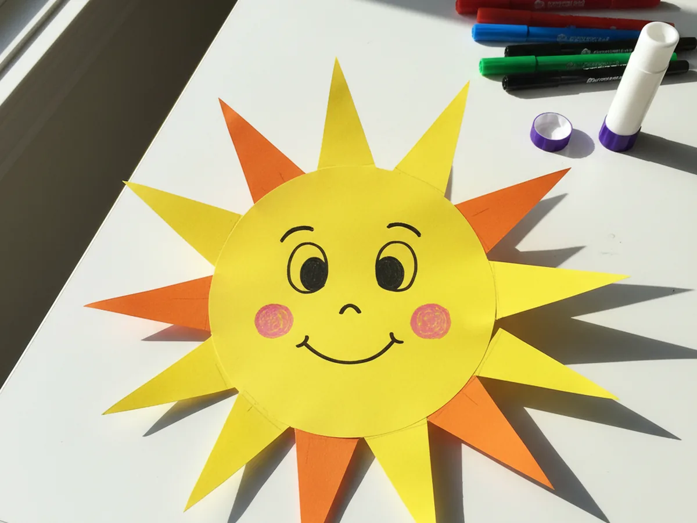
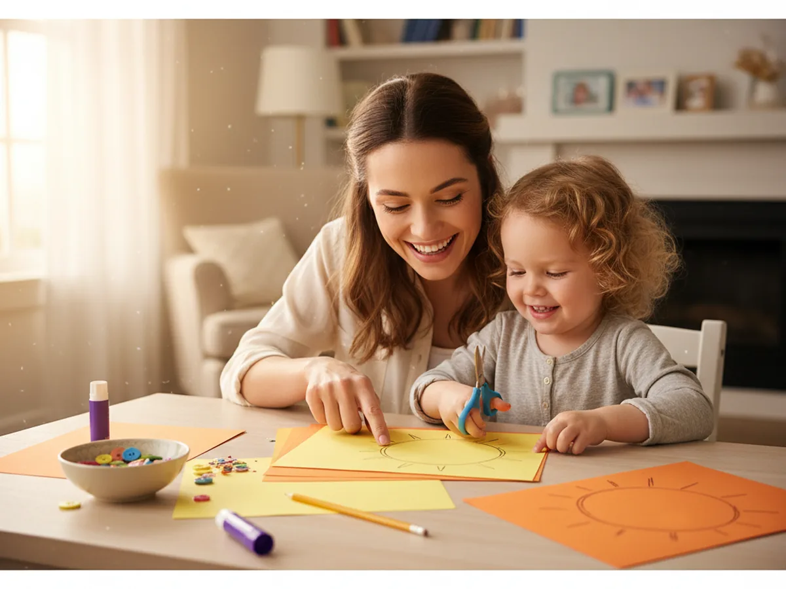
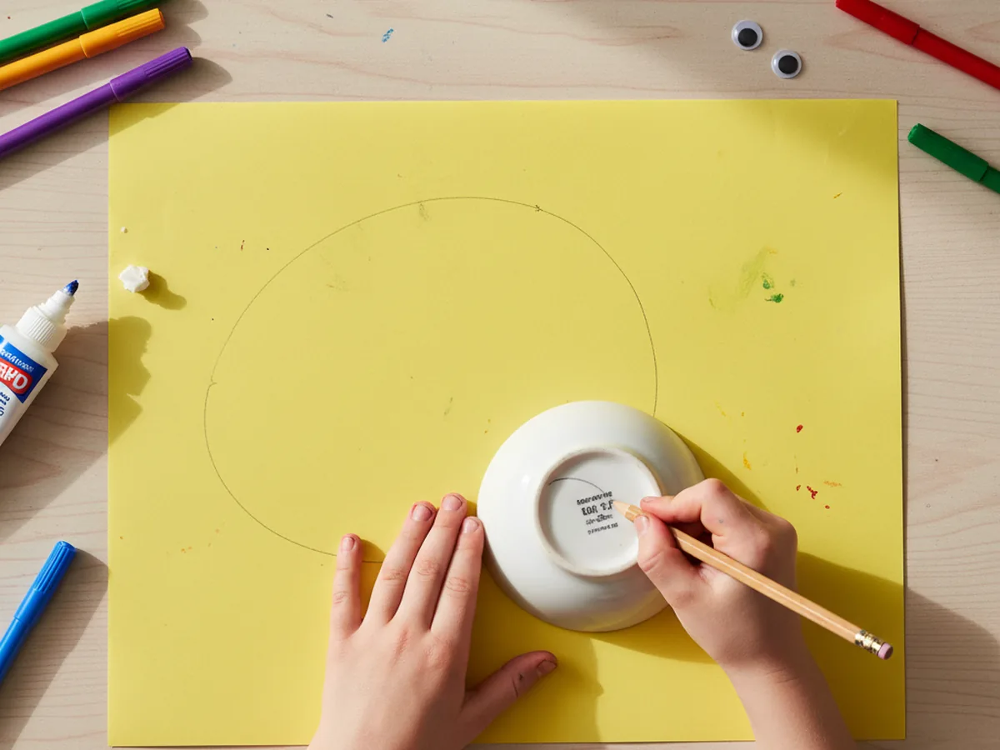
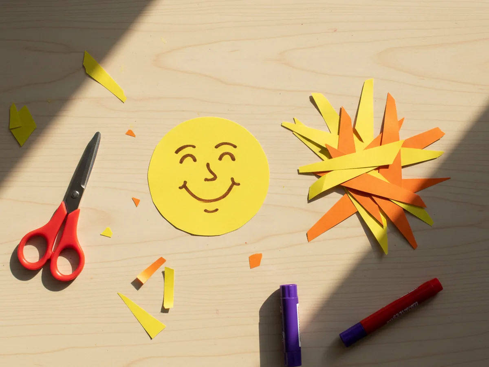
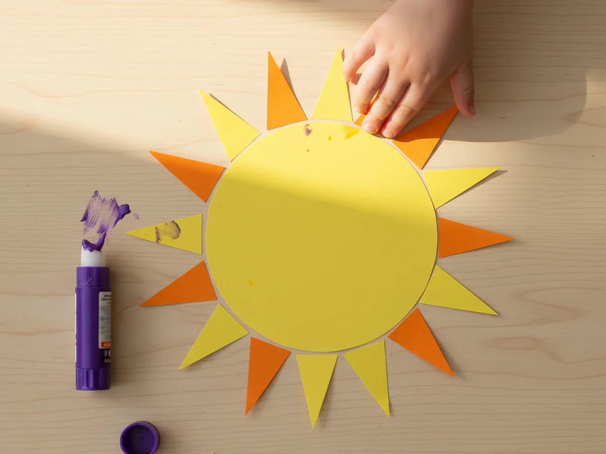
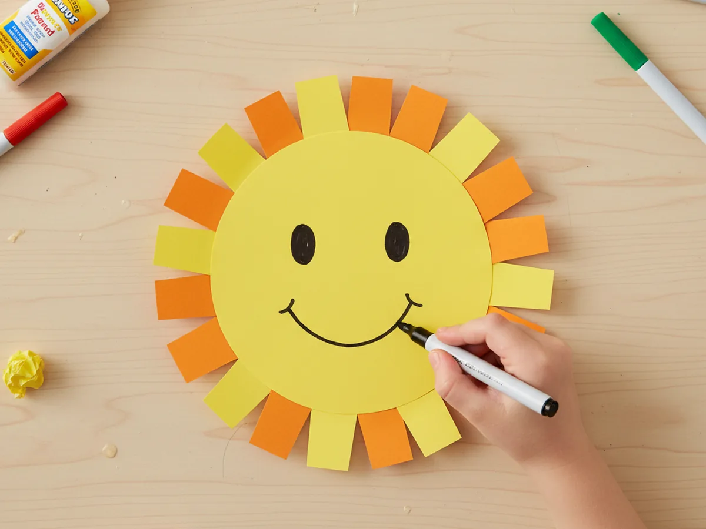
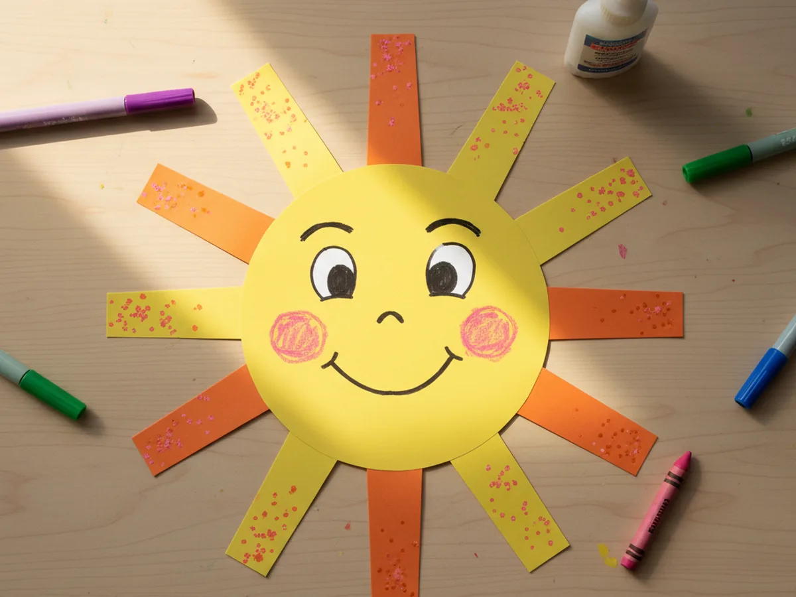
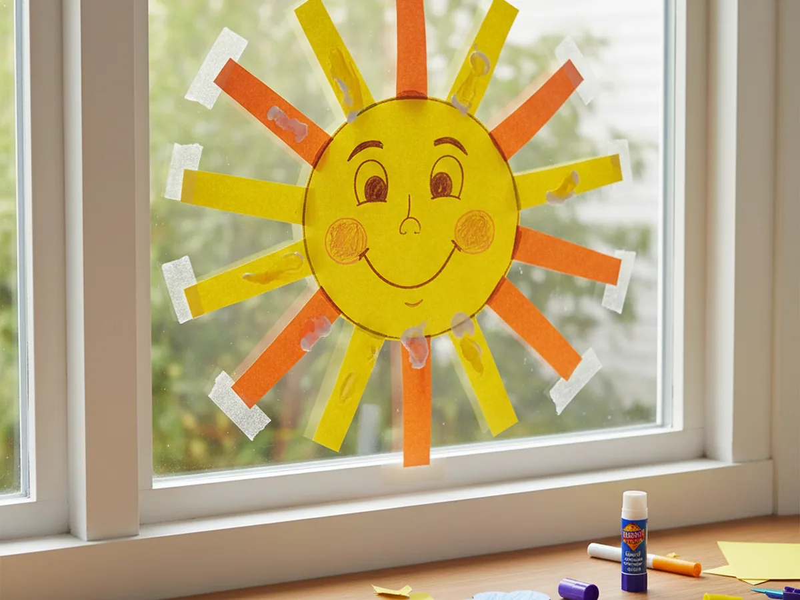

If your kids are anything like mine, they light up the moment they spot something cheerful on the kitchen wall. This sun paper craft is the perfect bright little project for a slow morning, a rainy afternoon, or an after-school activity that brings a literal ray of sunshine into your home. It's beginner-friendly, low-mess, and uses only the simple paper supplies you probably already have. ☀️
Why Kids Love This Craft
There's something about a smiling sun that makes kids grin right back. This easy sun paper craft turns into an instantly recognizable, friendly little character, which is exactly the kind of result that makes a child feel like a real artist. They get to make the choices: how big the smile is, how rosy the cheeks are, even how many rays the sun has. Every sun ends up with its own personality, and your kiddo will be so proud of theirs.
This simple sun paper craft is also a sneaky little fine motor workout. Tracing a circle, snipping out paper rays, gluing pieces in just the right spots, and drawing facial features all build the kind of small-hand control that helps kids hold a pencil and write later on. It feels like play because it is play, but it is doing real developmental work behind the scenes.
Best of all, the finished craft is so versatile. Tape it to a window so the morning light glows through it. Hang it on the fridge as a happy little greeting every time you walk in the kitchen. Or stick it on a popsicle stick and turn it into a puppet your child can use for storytime. A bright paper sun craft brings warmth into the room long after the gluing is done. 🌞

What You'll Need
Here is everything you need to make this sun paper craft with your child. Almost everything is probably already tucked into your craft drawer.
- Crayola construction paper, 12 colors, the yellow and orange sheets are exactly what you need.
- Astrobrights bright cardstock, an optional sturdier swap if you want a more durable sun.
- Crayola classic broad line markers, perfect for drawing the eyes, smile, and tiny details.
- Fiskars blunt-tip kid scissors, sized for ages 4 to 7 and easy on little hands.
- Elmer's washable purple glue sticks, the disappearing color makes it easy for kids to see what they have already glued.
- Self-adhesive googly eyes, optional but very fun if you want a goofy sun face.
- A small bowl or round lid, used as a tracing guide for the sun face.
- A pencil for tracing and lightly sketching the face.
Step-by-Step Instructions
Follow along with this sun paper craft step by step. Each step is short, friendly, and easy enough for a preschooler to do most of the work with a little help.
Step 1: Trace and Cut the Sun Face
Start by placing a small bowl, a roll of tape, or any round lid on a sheet of yellow construction paper. Have your child trace lightly around it with a pencil to make the sun's face. Aim for a circle around five inches across, which gives plenty of room for the smile and cheeks later.
Help your child cut along the line. The circle does not need to be perfect, a slightly wobbly edge actually makes the finished sun feel warmer and more handmade. If your child is brand new to scissors, you can pre-cut the circle and let them be the official tracer for this part.

Step 2: Cut Out the Sun Rays
Now for the rays! Grab a sheet of yellow and a sheet of orange construction paper, then cut around twelve triangle shapes for the sun's rays. Each ray should be about two to three inches long with a wide base, like skinny little pizza slices. Six yellow rays and six orange rays mixed together will give you a beautifully bright, layered sun.
If your preschooler is comfortable with scissors, let them cut a few rays themselves while you cut the rest. They do not need to be identical, mismatched rays look adorable and very kid-made. For toddlers, pre-cut all the rays ahead of time so the focus stays on the fun assembly part.

Step 3: Glue the Rays Around the Sun
Flip the yellow circle over so the back is facing up. Help your child apply a small dot of glue stick to the wide base of one ray and stick it to the back edge of the circle, with the pointy tip sticking outward. Continue all the way around the circle, alternating yellow and orange rays so they pop against each other.
Space the rays evenly, but truly do not stress about perfection here. Even slightly uneven rays look like a real handmade sun, full of personality. Press each ray firmly to make sure it sticks well, then carefully flip the whole sun back over so the smooth front is facing up again.

Step 4: Draw the Sun's Face
Time to bring your sun to life. Using a black or brown marker, help your child draw two friendly eyes about a third of the way down the circle, then a happy curved smile right below them. If your kiddo is using the optional googly eyes, this is the moment to peel and stick those on instead of drawing them.
Encourage big smiles and round eyes, the bigger the features, the more cheerful the sun looks from across the room. If your child wants to draw closed eyes, sleepy eyes, or even silly cross-eyes, let them. Every sun has its own mood, and that is part of the charm of this sun paper craft for kids.

Step 5: Add Cheerful Details
This is where every sun becomes uniquely your child's. Add two pink or red rosy cheeks under the eyes, little curved eyebrows above for extra personality, and a few tiny dots or sparkle marks near the tips of the rays to make the sun look like it is shining brightly. A pink crayon or a dab of finger from a stamp pad both work beautifully for cheeks.
If you want to extend the activity, your child can decorate the rays with little stripes, dots, or hearts. Some kids love adding a tiny crown of stars around the sun, others prefer a simple clean look. Both are wonderful, and there really is no wrong way to finish a paper sun craft.

Step 6: Display Your Sunshine
The fun final step! Find a sunny spot to show off your sun. Tape it to a window so morning light glows around the edges, hang it on the fridge with magnets, or pin it up on a bulletin board where everyone can see. If your child wants a portable version, glue the sun to a popsicle stick and turn it into a sunshine puppet for storytime.
However you display it, this is the moment your child gets to step back and beam at what they made. Take a quick photo, give a high five, and enjoy the sweet pride on their little face. This sun paper craft always ends with the same wide smile from the maker. 💛

Variations to Try
Sleepy Moon Version: Use the same circle and ray technique with dark blue and silver paper to make a smiling crescent moon and stars instead. It pairs beautifully with the sun for a cute day-and-night display in your child's bedroom.
Tissue Paper Sunburst: Skip the construction paper rays and let your child glue torn pieces of yellow and orange tissue paper around the back of the circle for a soft, layered sunburst effect. This version is especially great for younger toddlers who are still learning to use scissors.
Sunshine Suncatcher: Cut the center of the yellow circle out completely, then tape colored tissue paper across the opening before gluing on the rays. When you stick this sun craft on a sunny window, the colored center glows like real stained glass. It feels a little bit like magic.
Final Thoughts
This sun paper craft is one of those quiet little projects that delivers way more joy than you would expect from a few sheets of paper. It is quick to set up, easy to follow, and the finished sun keeps brightening your home long after the markers are put away. It works just as beautifully on a slow Saturday morning as it does for a preschool class or a summer party activity.
Try making a few suns side by side and let each child pick their own colors and face. They will compare smiles, name their suns, and probably ask to make another one tomorrow. Happy crafting, friend!
More Crafts You'll Love
If your kiddo loved this sun paper craft, here are two more bright and easy paper projects they will have a blast making with you: